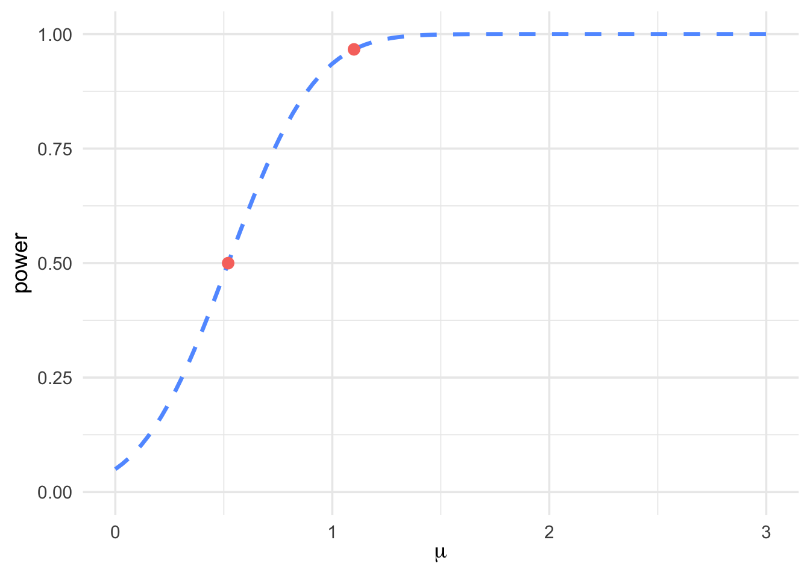

Chapter 9 One Sample Confidence Intervals On a Proportion
Perviously, we have introduced two types of confidence interval based on
known and unknown variance. Moreover, confidence intervals are also
applied to an unknown population proportion. For example, suppose we are
interested the proportion of total number of left-handed students among
all students who are currently studying at University of Toronto
Mississauga. The question is: how do we know such the parameter which
estimates the proportion of left-handed students at UTM? While, it is
impossible to proceed it directly by counting both the total number of
students and all left-handed students at UTM, due to the complexity and
the total workload of that task. Then, we have to work with confidence
intervals.
Firstly, we take a random sample of students at UTM, then we calculate
how many students are left-handed by dividing total number of
left-handed students in that sample with total number of students in it,
and denote the proportion as \(\hat{p}\). Next we begin our confidence
interval calculation to get a range of number with a certain level of
confidence.
Now let’s begin with the proper definition of confidence interval on
proportion.
Definition 9.1 We select a random sample of size \(n\) from a population with unknown
proportion \(p\) of success. An approximate confidence interval for p
is:
\[p = \hat{p} \pm z_{\frac{\alpha}{2}} \cdot \sqrt{\frac{\hat{p}(1 - \hat{p})}{n}}, \text{ where $\hat{p} = \frac{\text{number of observations satisfying the criteria}}{n}$.}\]
In addition, \(n\) is the sample size.
To apply this confidence interval, there are \(3\) conditions that we need
to guarantee:
\(1\). Random sample;
\(2\). Independent and identically distributed Bernoulli trails;
\(3\). We have a large chosen sample size (\(n\hat{p} \ge 10\) and \(n(1-\hat{p}) \ge 10\)).
A good way to understand confidence interval is visualization. Now,
suppose we have a valid estimation \(\hat{p}\). After the entire procedure
of confidence interval, our population proportion (\(p\)) should be as the
following number line shows:

Figure 9.1: Visualization of the result of confidence interval on a proportion.
Remember that your final answer of the range of \(p\) must between \(0\) and
\(1\), since we are working with proportion.
Summary about One Sample Confidence Intervals
We have introduced one sample confidence interval under three different cases: given population variance, unknown population variance and unknown population proportion. All the material of one sample confidence interval comes from chapter \(6, 7, 8\), which seems like you to remember a lot. However, the reason why we give this summery is to help you to remember the basic skeleton of one sample confidence interval. Let’s revisit the three distinct types of confidence interval:
Known variance: \(\hat{x} \pm z_{\alpha/2} \cdot \frac{\sigma}{\sqrt{n}}\) (Chapter 7).
Unknown variance: \(\bar{x} \pm t_{\scriptscriptstyle{\alpha/2}} \cdot \frac{s}{\sqrt{n}}\)
Proportion: \(\hat{p} \pm z_{\scriptscriptstyle{\alpha/2}} \cdot \sqrt{\frac{\hat{p}(1-\hat{p})}{n}}\)
The question is: what is the similarity between the three distinct types
of confidence interval? You may have already noticed that the confidence
intervals above are all follow such a skeleton that \(\bar{x}\) plus or
minus its margin of error (different between each type of C.I.).
If we keep questioning ourselves that how the margin of error comes
from, you will catch the pattern. The margin of error contains reference
distribution and the standard deviation of \(\bar{x}\) under its reference
distribution. Let’s analyze each type of confidence interval to prove my
statement is true:
The first type (given population variance) confidence interval is quite
easy to recognize. Recall chapter \(3\): The Central Limit Theorem, we
state that \(\bar{x} \sim N(\mu, \frac{\sigma^2}{n})\), which is how
reference distribution comes from with given population variance. To get
the standard deviation of \(\bar{x}\), we simply take the square root of
the variance, then \(s_{\bar{x}} = \frac{\sigma}{\sqrt{n}}\). Finally, we
multiply reference distribution at the point \(\frac{\alpha}{2}\) with the
standard deviation of \(\bar{x}\) under normal distribution to get the
margin of error.
The second type (unknown population variance) confidence interval is
similar to the first type, but the reference distribution is
t-distribution instead of normal distribution. In chapter \(7\), we
introduced the calculation of sample variance (\(s^2\)) to estimate
population variance (\(\sigma^2\)), and \(s^2\) is an unbiased estimator of
\(\sigma^2\) (the proof of this statement is in STA260, in this course we
can assume it freely). In chapter \(2\), we defined that
\(T = \frac{\bar{x} - \mu}{(\frac{s}{\sqrt{n}})} \sim t_{n-1},\) then the
term \(\frac{s}{\sqrt{n}}\) (verify this by yourself as an extra exercise)
is the standard deviation of \(\bar{x}\) under t-distribution with \(n-1\)
degrees of freedom. Finally, we multiply multiply reference distribution
at the point \(\frac{\alpha}{2}\) with the standard deviation of \(\bar{x}\)
under t-distribution to get the margin of error.
The third type (estimate population proportion) confidence interval is
slightly harder to identify. Recall chapter \(4\) that we can approximate
binomial distribution by normal distribution. Suppose that a random
variable \(X \sim Binomial(n,p)\), then the random variable
\(X \sim N(np, np(1-p)).\) From chapter \(4\), we know that
\(\hat{p} \sim N(\mu_{\hat{p}} = p, \sigma_{\hat{p}}^{2} = \frac{p(1-p)}{n})\).
Trivially, the standard deviation of \(\hat{p}\) is
\(\sqrt{\frac{p(1-p)}{n}}\), since we don’t know the value \(p\) and use
\(\hat{p}\) to estimate that. Then, standard deviation of \(\hat{p}\) is
\(\sqrt{\frac{\hat{p}(1-\hat{p})}{n}}\). Finally, by multiplying the
reference distribution and standard deviation, we get the margin of
error of the confidence interval.
Conclusion About One Sample Confidence Intervals
If you follow the skeleton below, one sample confidence interval will become easier:
1. Identify what type of one sample confidence interval to use from given information;
2. Construct your confidence interval that fits the circumstance which you are facing, it either going to be \(\bar{x} \pm M.E.(\bar{x})\text{ or } \hat{p} \pm M.E.(\hat{p});\)
3. Check the validity of your final answer. For example, the range of \(p\) must between \(0\) and \(1\).
4. Clearly state your final conclusion: we have a certain percentage of confidence to guarantee that the value of the chosen sample is between its lower bound and upper bound.